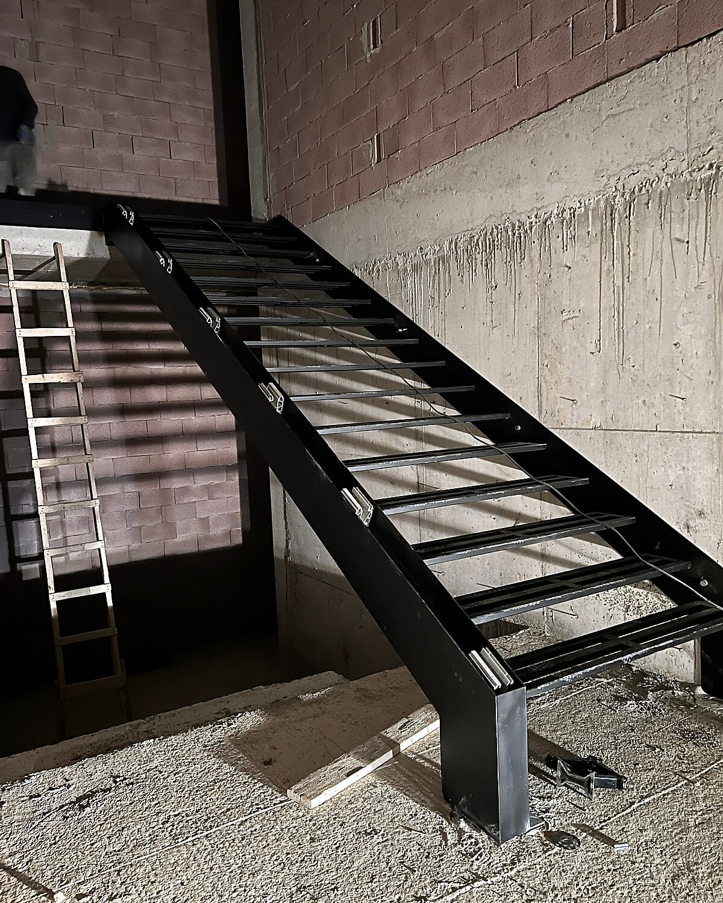

ლითონის კიბე ღია საფეხურებით ბეტონის კედლებს შორის
შავი ლითონის კიბე ღია საფეხურებით და მასიური გვერდითი კოჭით, დაუმუშავებელ ბეტონისა და ბლოკის კედლებს შორის.
კიბეები
მსგავსი ნამუშევრები


კონტაქტი
მოგწონთ ეს ნამუშევარი?
დაგვირეკეთ ან მოგვწერეთ WhatsApp-ზე და მოკლედ აღწერეთ თქვენი იდეა. შეგვიძლია მსგავსი ნაკეთობა თქვენს ზომებზე დავამზადოთ.
ტელეფონი599 01 21 05
მისამართითბილისი, საქართველო